Мобільний застосунок продавця
Повний посібник з FindMyFlowers Business, застосунку для Android для власників квіткових крамниць, флористів і їхніх працівників: фотографуйте й оцінюйте букети біля вази, перевіряйте розумні вази, обробляйте замовлення й запити клієнтів на букети, ведіть облік складу, рахуйте його з фото, а також створюйте й прораховуйте букети з ШІ-флористом.
Початок роботи
Вітальний екран
Установіть FindMyFlowers Business на телефон з Android і відкрийте застосунок. Вітальний екран пропонує два варіанти: Увійти, якщо у вас уже є обліковий запис продавця, або Створити обліковий запис продавця, щоб зареєструвати нову крамницю з телефона.
Застосунок використовує той самий обліковий запис, що й Портал продавця за адресою vendors.findmyflowers.pl. Усе, що ви змінюєте в одному місці, з’являється в іншому.
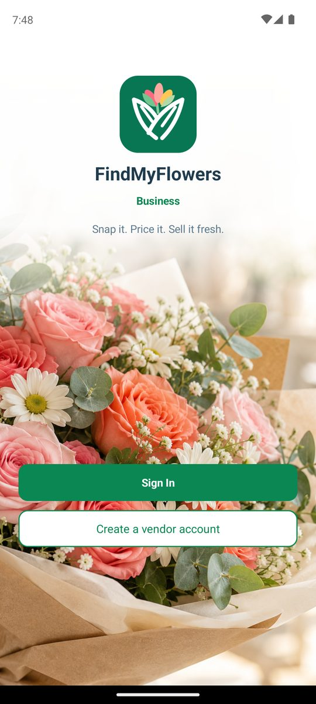
Вхід
Введіть ім’я користувача й пароль продавця, а потім торкніться Увійти. Ви залишаєтеся в системі, доки не вийдете або доки не завершиться сеанс; після цього застосунок повертає вас сюди з повідомленням Сеанс завершився. Якщо сервер недоступний, застосунок так і повідомляє, а не скаржиться на неправильний пароль.
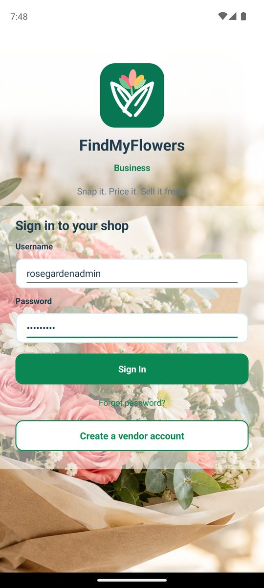
Забули пароль
Торкніться Забули пароль? під кнопкою входу, введіть ел. пошту облікового запису продавця й торкніться Надіслати. Посилання для скидання пароля надійде на вашу пошту.
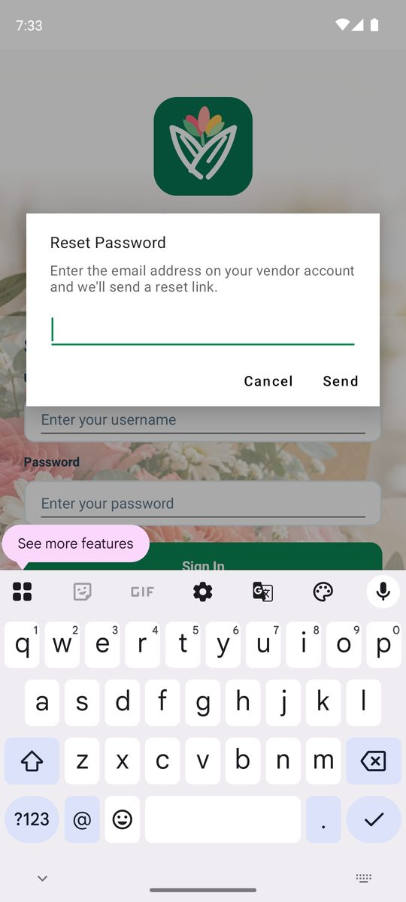
Створення облікового запису продавця НОВЕ
Крок 1 — Ваша компанія
На вітальному екрані торкніться Створити обліковий запис продавця. Виберіть Квіткова крамниця або Флорист-фрилансер, потім введіть назву компанії, необов’язковий опис, контактну ел. пошту й необов’язковий контактний телефон.
Як ви продаєте? — У моїй крамниці, з розумними вазами або Лише онлайн, із доставкою, якщо ви не приймаєте відвідувачів: тоді ви виставляєте букети з доставкою без розумних ваз і можете додати необов’язкове посилання на онлайн-вітрину (наприклад, ваш Instagram). Торкніться Далі.
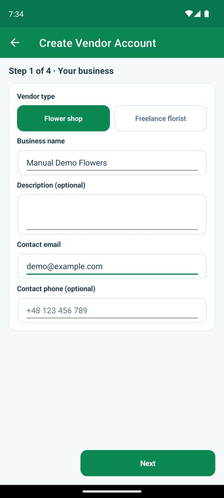
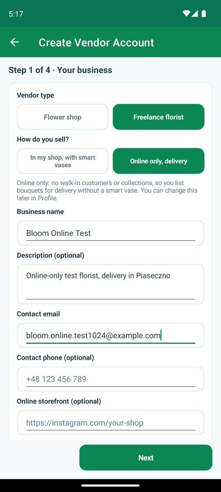
Крок 2 — Адреса крамниці
Клієнти знаходять ваші букети на мапі за цією адресою, тому її треба перевірити, перш ніж продовжити. Або Ввести адресу (вулиця, поштовий індекс, місто, країна), або перемкніться на Точка на мапі й торкніться місця, де розташована крамниця. Кнопка ◎ використовує поточне місцезнаходження телефона.
Торкніться Перевірити адресу й виберіть відповідну підказку зі списку. Шпилька переміститься в підтверджене місце.
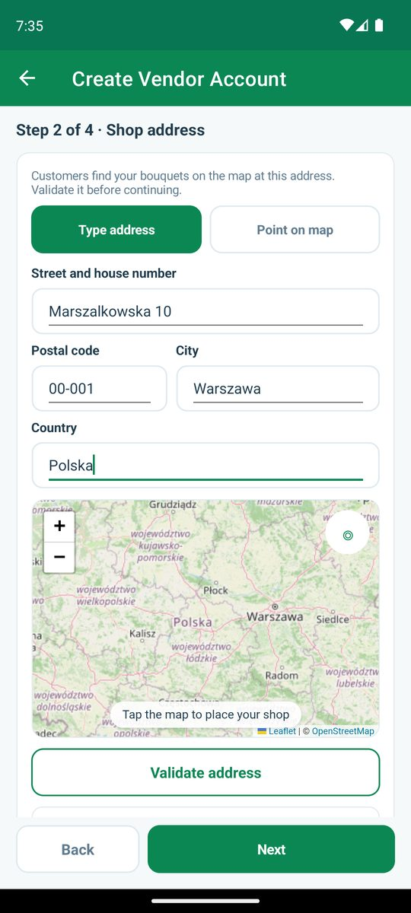
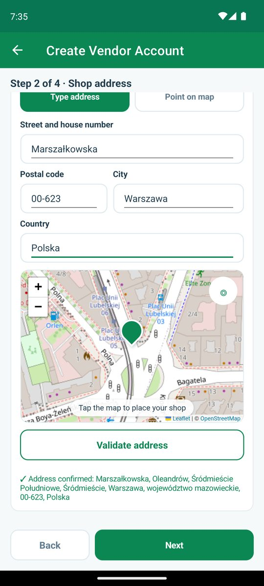
Крок 3 — Платіжна адреса
Залиште позначку Така сама, як адреса крамниці або зніміть її й введіть окрему платіжну адресу для рахунків. Безкоштовний пробний період починається одразу після створення облікового запису. Застосунок не запитує платіжну картку; додайте її пізніше в розділі «Оплата» на Порталі продавця.
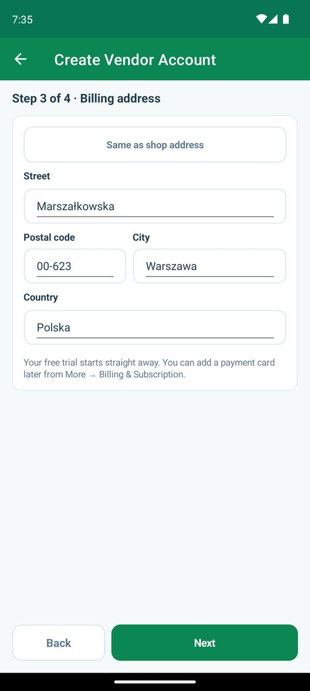
Крок 4 — Ваші дані для входу
Виберіть ім’я користувача й пароль (щонайменше 8 символів, літери й цифри), підтвердьте пароль, прийміть Умови використання й Політику конфіденційності та торкніться Створити обліковий запис. Застосунок одразу виконає вхід. Банер попросить підтвердити ел. пошту (Надіслати ще раз надсилає посилання повторно), а нові облікові записи чекають на схвалення, доки адміністратор платформи їх не схвалить, — до того ви можете все переглядати, але не можете виставляти букети.
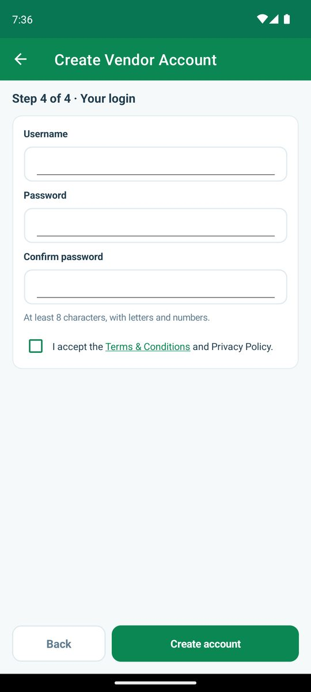
Головна
Панель «Головна»
Після входу ви потрапляєте на екран Головна, що коротко показує вашу крамницю:
Вази онлайн: скільки ваших зареєстрованих ваз надіслали сигнал за останні п’ять хвилин (наприклад, 1 з 2 зареєстрованих). Букети · Доступний: букети, які клієнти можуть купити зараз. Нові замовлення · Очікує: замовлення, що чекають на вас.
Швидкі дії відкривають основні завдання: Керувати вазами й завантажувати фото, Переглянути букети, Мапа букетів, Запити на букети, Склад і ШІ-флорист. Остання активність показує найновіші події щодо букетів і замовлень.
Кнопка + у правому верхньому куті додає букет. Кнопка ☰ відкриває меню «Більше». Нижня панель перемикає між Головна · Букети · Замовлення · Сповіщення · Більше.
Кнопка ? угорі відкриває цей посібник на сторінці екрана, на якому ви перебуваєте (див. Довідка наприкінці посібника).
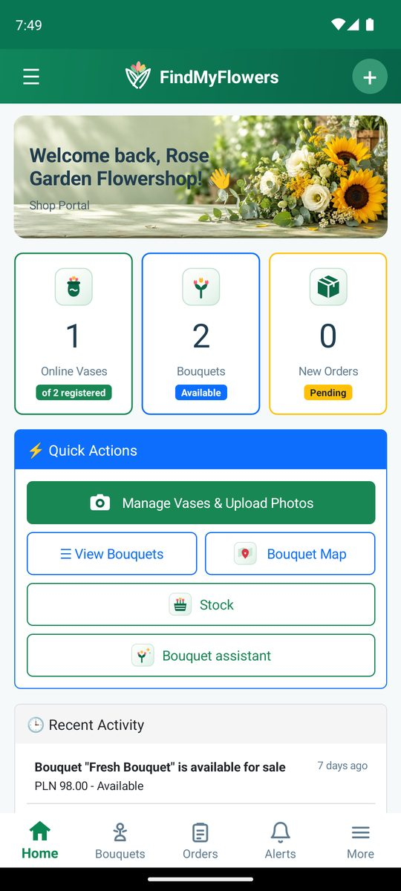
Мої вази на екрані «Головна»
Прокрутіть екран «Головна» вниз, щоб побачити кожну вазу з позначкою Онлайн (зелена) або Офлайн (червона) і часом, коли її бачили востаннє. Використовуйте Переглянути деталі або Завантажити фото прямо звідси, або Переглянути всі вази, щоб побачити повний список. Ваза офлайн, якщо не надсилала сигнал понад п’ять хвилин. Перевірте її живлення й Wi-Fi.
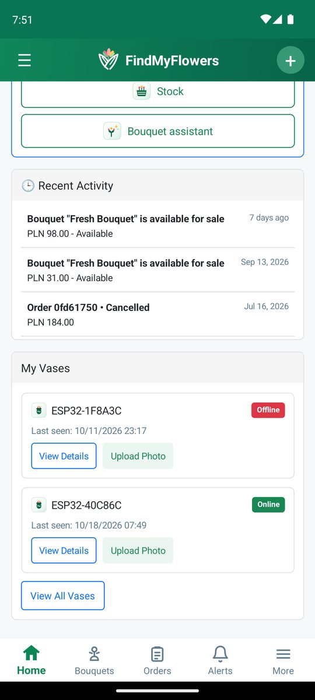
«Головна» для крамниць лише онлайн НОВЕ
Якщо ви продаєте лише онлайн, на екрані «Головна» замість ваз показано Онлайн-оголошення (скільки букетів виставлено й скільки спливає сьогодні), а перша швидка дія — Додати букет онлайн. Кнопка + теж виставляє букет із доставкою. Пункти «Мої вази» й «Замовити розумні вази» приховано в меню «Більше».
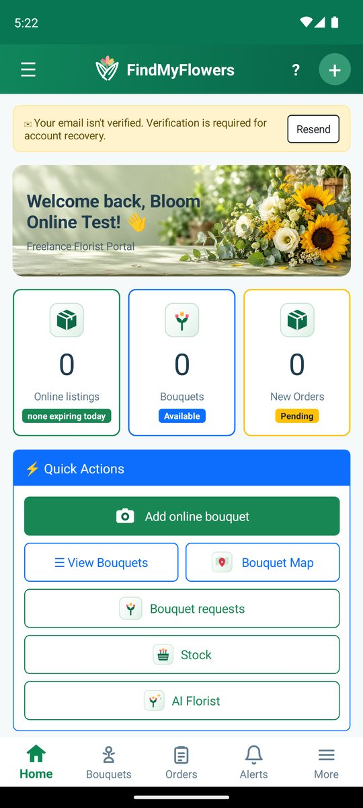
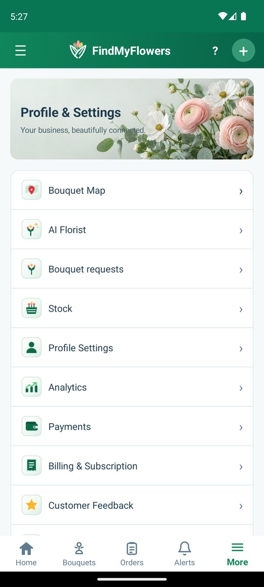
Розумні вази
Мої вази
Відкривається з Керувати вазами й завантажувати фото, Переглянути всі вази або Більше → Мої вази. Кожна картка показує серійний номер вази, стан установлення й останні показники температури та вологості. Торкніться картки, щоб переглянути деталі, або кнопки камери, щоб сфотографувати букет у цій вазі.
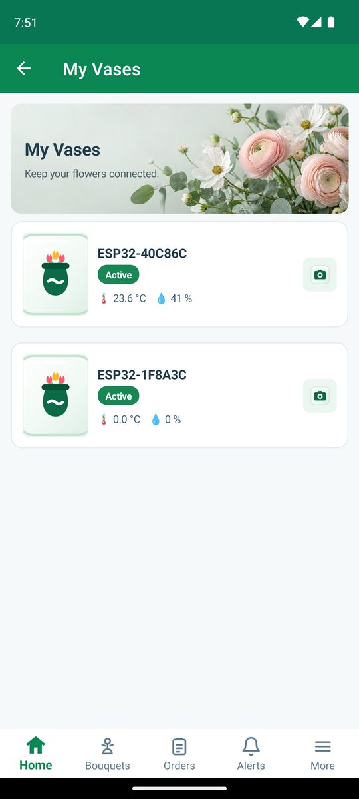
Деталі вази
Показує Статус пристрою (установлення), Стан, Останній сигнал, актуальні Дані з датчиків (температура, вологість) і Поточний стан букета. Завантажити нове фото замінює фото букета, яке бачать клієнти. Сканувати QR на верхній панелі відкриває QR-сканер.
Ваза офлайн показує стан Критичний, час останнього сигналу й останні показники. Вони можуть бути застарілими (часто 0.0), тож перевірте пристрій, перш ніж щось робити на їх основі.
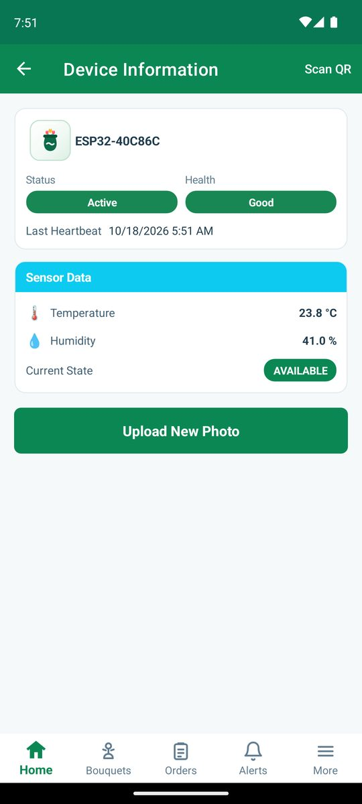
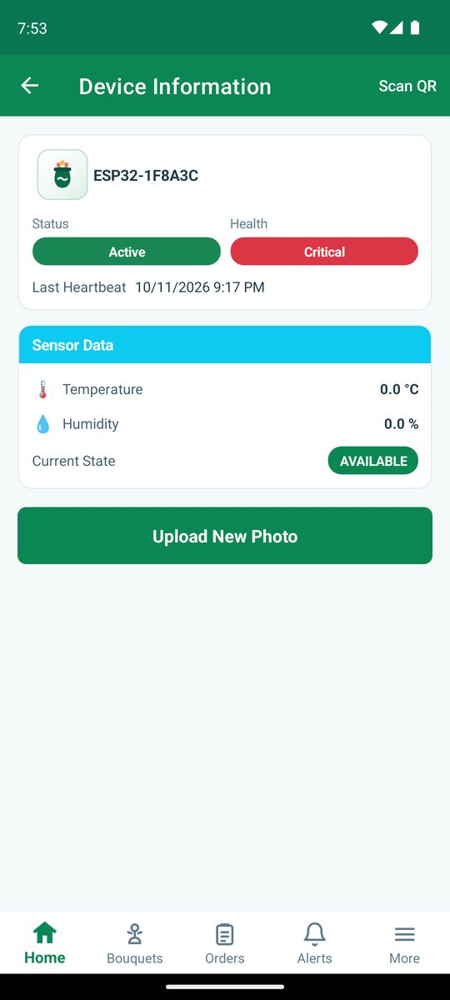
Сканування QR-коду вази
Торкніться Сканувати QR і наведіть камеру на QR-код на вазі, щоб перейти до цієї вази. Першого разу Android попросить дозвіл на камеру. Виберіть Під час використання застосунку. Кнопка ліхтарика підсвічує темні кути. Якщо код не читається, введіть серійний номер або ID вази в полі Або введіть ID вази вручну й торкніться Перейти.
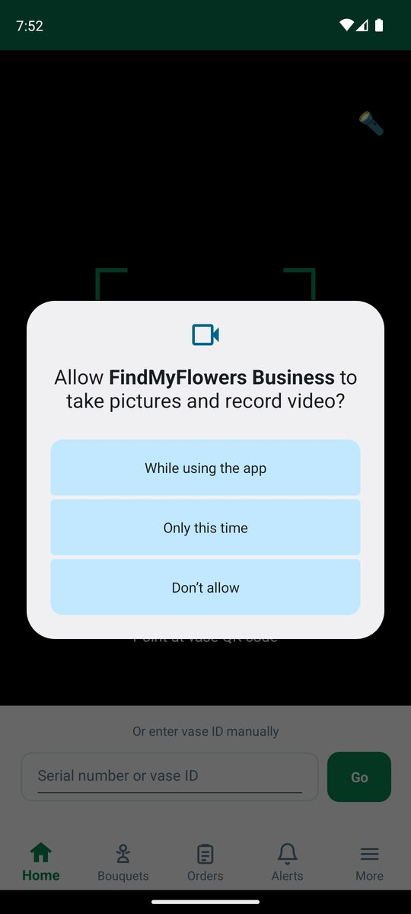
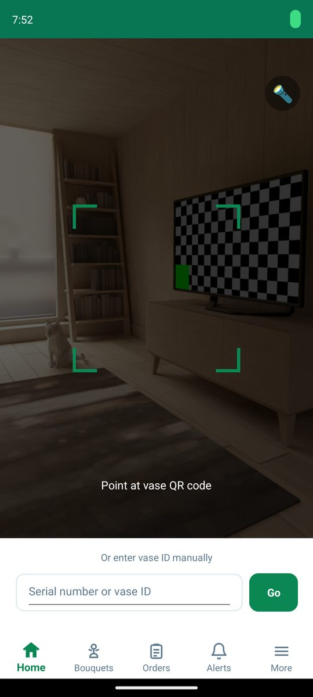
Завантаження фото букета
У вазі торкніться Завантажити нове фото (або кнопки камери). Камера телефона відкриється автоматично. Скадруйте букет у вазі або скористайтеся Зробити фото / Вибрати з галереї. Фото стискається й завантажується; воно стає зображенням, яке клієнти бачать на мапі. Потім установіть ціну (див. «Букети»), щоб виставити букет на продаж.
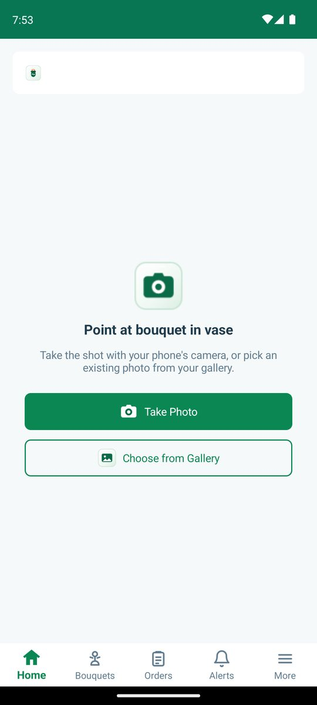
Букети
Мої букети
Вкладка Букети показує кожен букет із фото, статусом, ціною, оцінкою свіжості й датою. Фільтруйте за Усі, Доступний, Продано або Потрібна ціна (сфотографовано, але ще без ціни). Значок камери на картці оновлює фото цього букета; торкніться картки, щоб відкрити його.
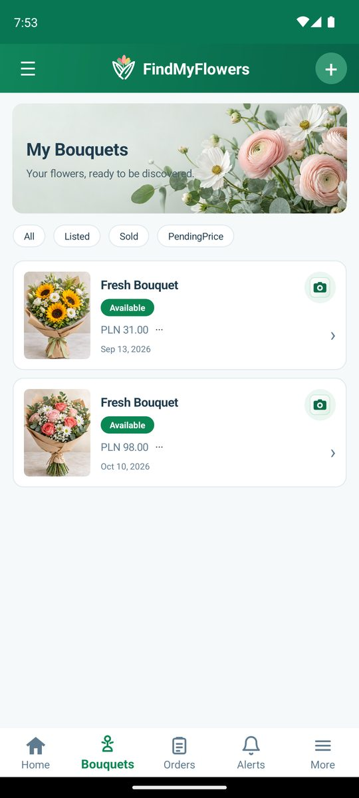
Деталі букета
Показує фото букета, назву, статус, ціну й дату створення, вазу, до якої його прив’язано (торкніться, щоб відкрити вазу), а також температуру й вологість у цій вазі. Дії: Змінити ціну, Переглянути вазу, Показати на мапі і Видалити букет (просить підтвердження, і цю дію не можна скасувати).
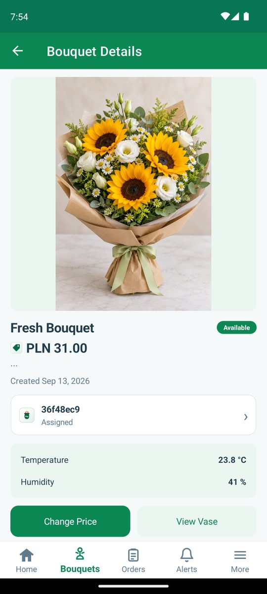
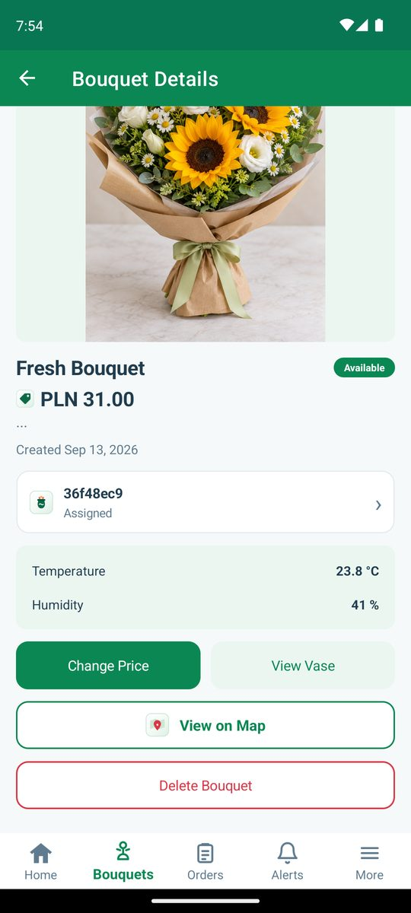
Зміна ціни й оцінки свіжості
Торкніться Змінити ціну, введіть нову ціну в злотих і торкніться Зберегти. Далі з’явиться панель Оцінка свіжості: залиште поточну оцінку, виберіть 1–3 квітки (скільки днів ви гарантуєте свіжість букета) або Без оцінки. Клієнти бачать оцінку як піктограми квітів; щодня вона зменшується на одну квітку й ніколи не змінює ціну.
Установлення ціни робить букет зі статусом Потрібна ціна доступним для купівлі.
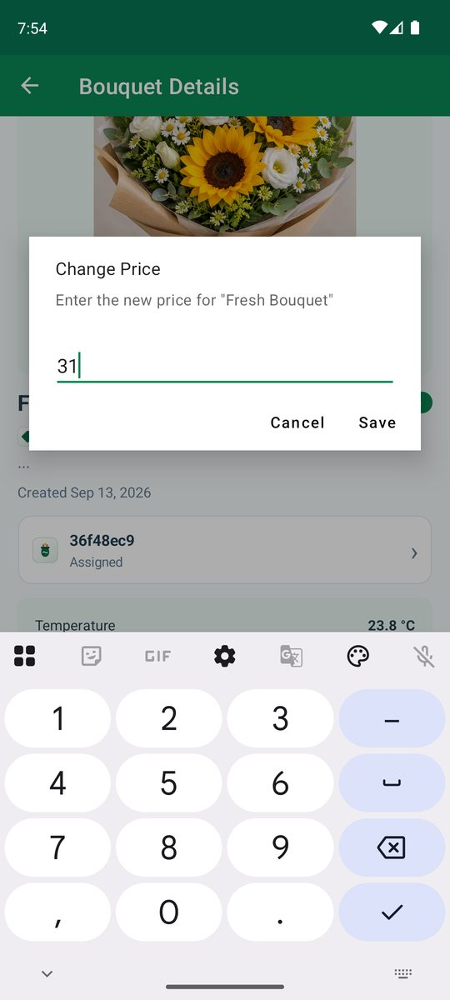
Мапа букетів
Відкривається з Головна → Мапа букетів, Більше → Мапа букетів або Показати на мапі. Показує ваші букети як маркери з фото й цінами за адресою крамниці — так, як їх бачать клієнти. Маркери із зеленою облямівкою доступні; сірі ще не в продажу. Список під мапою відкриває кожен букет. ◎ показує ваше місцезнаходження.
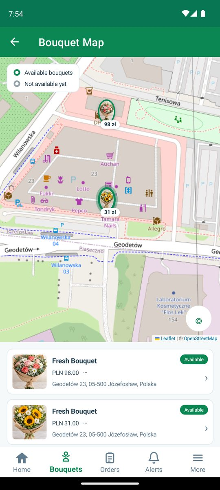
Додавання букета
Торкніться + угорі екрана «Головна» або «Букети». Виберіть вазу, додайте фото, введіть назву, установіть оцінку свіжості повзунком і введіть ціну. Залиште ввімкненим Зробити букет доступним, щоб одразу його виставити, а потім торкніться Зберегти букет.
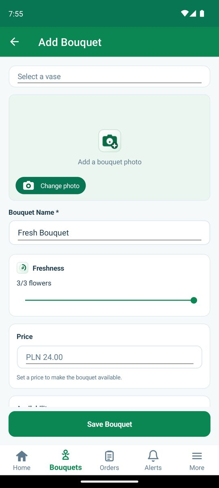
Додавання букета онлайн НОВЕ
Крамниці лише онлайн виставляють готові букети з доставкою: Головна → Додати букет онлайн або +. Додайте чітке фото готового букета (клієнти не побачать його наживо), назву й ціну в злотих і виберіть, скільки він залишатиметься свіжим — 1, 2 або 3 дні; форма показує, до коли букет буде на мапі.
За бажанням перелічіть квіти (через кому — клієнти з відповідними сповіщеннями про букети отримають повідомлення) і додайте опис, а потім торкніться Виставити з доставкою. Зона й вартість доставки — стандартні для платформи; клієнти не можуть забрати букет самостійно.
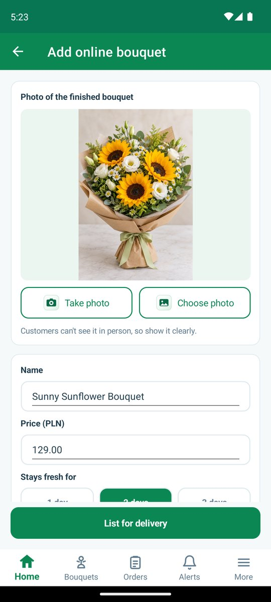
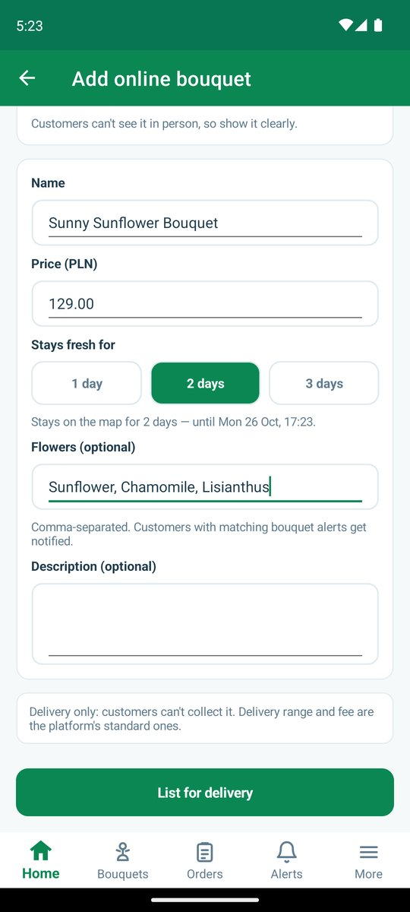
Замовлення
Замовлення
Вкладка Замовлення показує замовлення клієнтів із номером замовлення, клієнтом, кількістю позицій, статусом, станом оплати, сумою й датою. Використовуйте фільтри (Усі, Оплачено, Готується, Готове до самовивозу, У доставці …), щоб зосередитися на одному етапі.
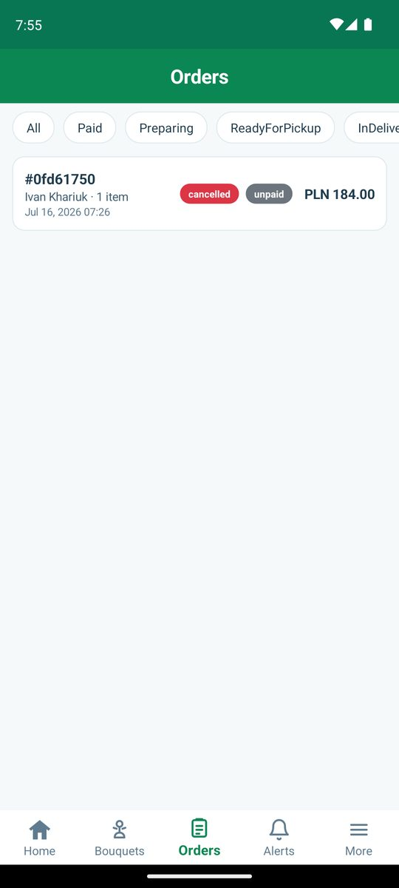
Деталі замовлення й зміна статусу
Торкніться замовлення, щоб побачити його статус, оплату, клієнта, спосіб виконання (доставка або самовивіз), дати, адресу доставки, позиції з проміжною сумою, вартість доставки й загальну суму, а також Хронологія подій. Скасовані замовлення показують причину скасування.
Активні замовлення показують кнопки наступного кроку: Прийняти й підготувати (оплачене замовлення), потім Готове до самовивозу або Почати доставку, потім Позначити як доставлене. Скасувати замовлення просить підтвердження, і цю дію не можна скасувати.
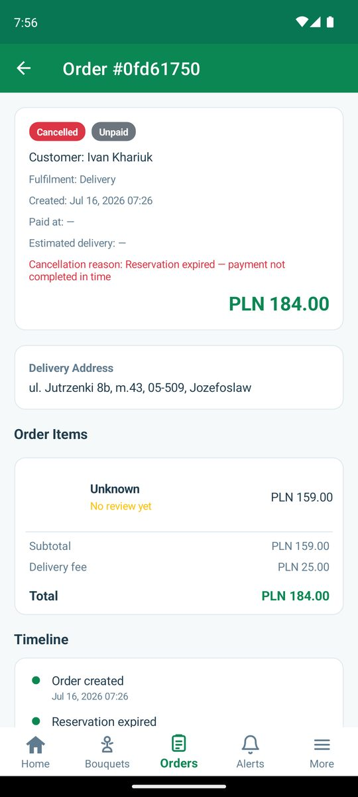
Сповіщення
Сповіщення
Вкладка Сповіщення збирає повідомлення — наприклад, коли ваза переходить в офлайн, букет продано, вам призначено нову вазу або клієнт поблизу публікує запит на букет. Вони згруповані на Сьогодні, Учора і Старіші, а вкладка показує кількість непрочитаних, наприклад Сповіщення (2). Торкніться сповіщення про вазу, щоб відкрити цю вазу, або сповіщення про запит, щоб відкрити запит.
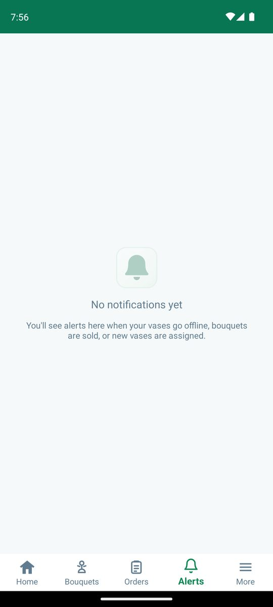
Меню «Більше»
Більше
Вкладка Більше (а також кнопка ☰) містить усе інше: Мапа букетів, ШІ-флорист, Запити на букети, Склад, Налаштування профілю, Мої вази, Замовити розумні вази, Аналітика, Платежі, Оплата й підписка, Відгуки клієнтів, Години роботи, Довідка, Зв’язатися з нами і Вийти.
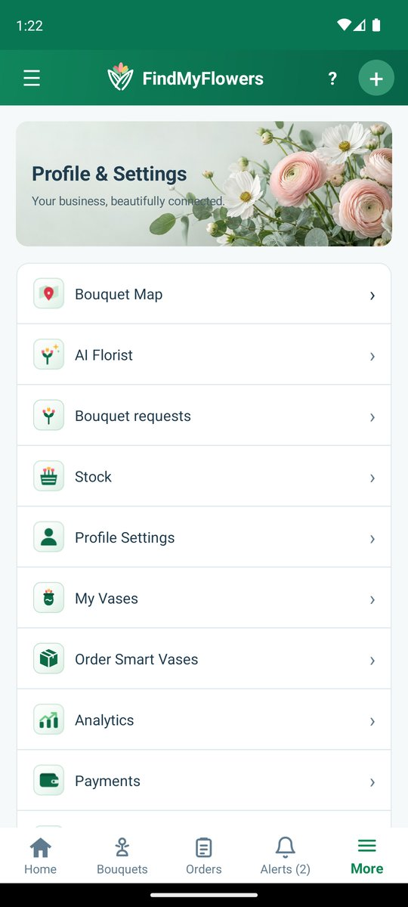
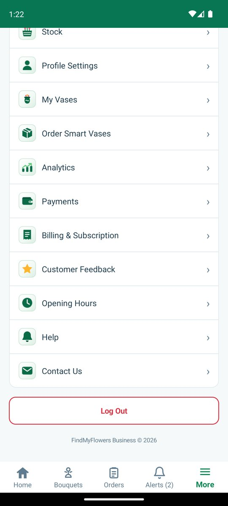
Склад НОВЕ
Огляд складу
Відкрийте Головна → Склад або Більше → Склад, щоб побачити квіти, зелень і матеріали, які у вас є. Плитки рахують Позиції, Мало на складі і Немає на складі; Вартість складу підсумовує кількість × ціну за одиницю (позиції без ціни не враховуються). Шукайте за назвою, кольором або постачальником і фільтруйте за Усі / Низький / Немає на складі / Архівовано та видом. Торкніться Додати позицію на склад, щоб додати нову позицію, або Порахувати з фото, щоб порахувати склад за допомогою ШІ (нижче).
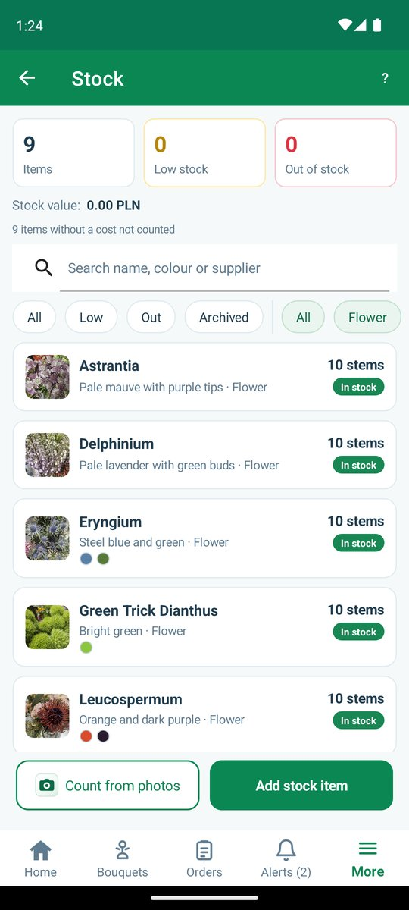
Позиція складу й оновлення
Торкніться позиції, щоб побачити її кількість, статус, ціну за одиницю, вартість, поріг сповіщення про малий залишок, останнє надходження й примітки. Редагувати змінює її дані.
У розділі Оновити склад виберіть, що сталося: Надійшло (поставка; ціна за одиницю, введена тут, стає поточною ціною позиції), Використано, Списано або Пораховано (інвентаризація, що встановлює точну кількість). Введіть кількість і необов’язкову примітку, потім Зберегти. Історія нижче показує кожну зміну з кількістю після неї. Архівувати позицію приховує позиції, яких у вас більше немає в асортименті.
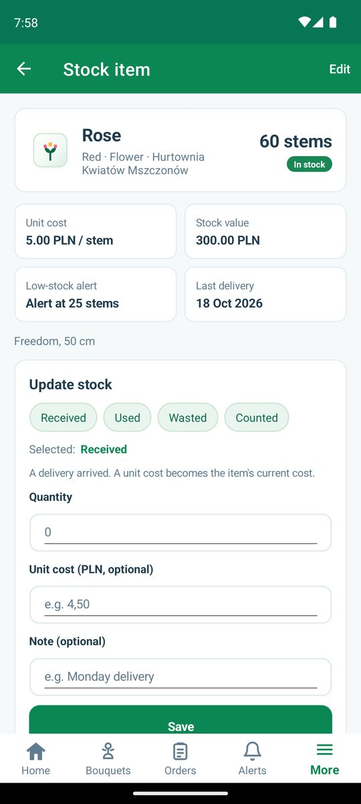
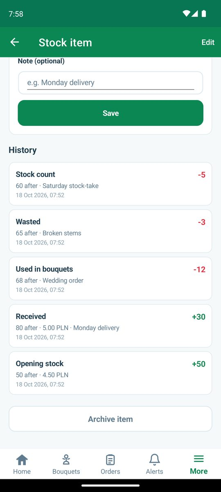
Додавання позиції на склад
Виберіть Вид (Квітка, Зелень або Матеріал), введіть назву, необов’язковий колір, поточну кількість (записується як початковий залишок), необов’язкову ціну за одиницю, поріг сповіщення про малий залишок, постачальника й примітки, а потім торкніться Додати на склад. Квіти й зелень рахуються в стеблах. ШІ-флорист використовує ці ціни за одиницю, коли прораховує рецепти.
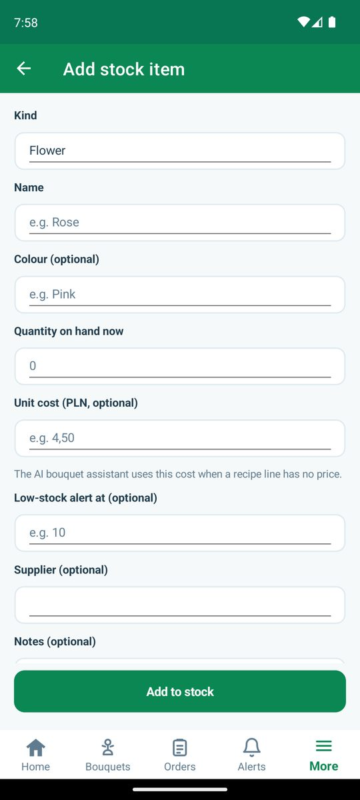
Підрахунок складу з фото НОВЕ
Торкніться Порахувати з фото на екрані «Склад» (або Порахувати склад із фото на екрані ШІ-флориста). Сфотографуйте робочий стіл або холодильну камеру кнопкою Зробити фото або Вибрати фото — від 1 до 5 фото; кілька фото тих самих стебел — не проблема. Торкніться Порахувати з фото. Кожен підрахунок використовує одне розпізнавання фото з місячного ліміту для складу, показаного під кнопкою.
Перевірте кількість. Для кожної квітки, знайденої ШІ, ви бачите, скільки є Зараз, результат підрахунку й різницю (наприклад, −7 або без змін). Виправте кількість кнопками − / + або введіть її. Рядки, які ШІ зіставив із позицією складу, позначено; для квітки, якої ще немає на складі, виберіть відповідну позицію в Пов’язати з позицією… або залиште рядок непозначеним. Записуються лише позначені рядки.
Нічого не змінюється, доки ви не торкнетеся Застосувати залишки: кожен позначений рядок зберігається як інвентаризація Пораховано з підтвердженою вами кількістю й з’являється в історії позиції. Відхилити скасовує підрахунок без зміни складу.
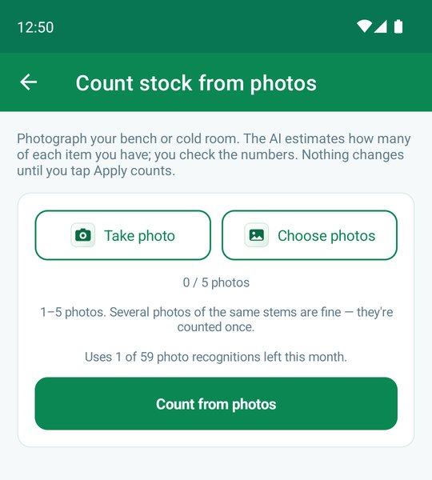
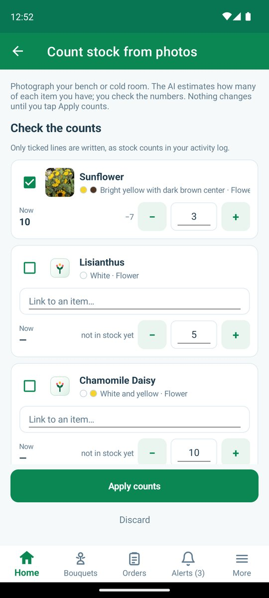
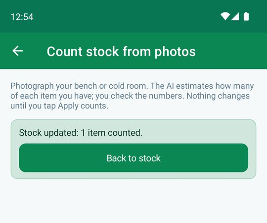
ШІ-флорист НОВЕ
1 — Виберіть, як почати НОВЕ
Відкрийте ШІ-флориста з екрана Головна або з Більше → ШІ-флорист. Є два способи почати:
Почати з мого складу — виберіть квіти зі свого складу й отримайте три рецепти, що використовують лише те, що у вас є. Картка показує, скільки позицій у вас є, з кількома їхніми фото. (Мій склад + замовити відсутнє — незабаром.)
Відтворити букет із фото — сфотографуйте один готовий букет, наприклад фото від клієнта, і подивіться, які з його квітів у вас є, а яких бракує.
Нижче ви знайдете ліміт на цей місяць (залишок сканувань фото · дизайнів · переглядів), Скільки мені коштує цей букет?, Збережені рецепти, Порахувати склад із фото, Налаштування витрат і Фірмовий стиль. Якщо ви залишили дизайн незавершеним, Далі повертає до нього без повторного списання.
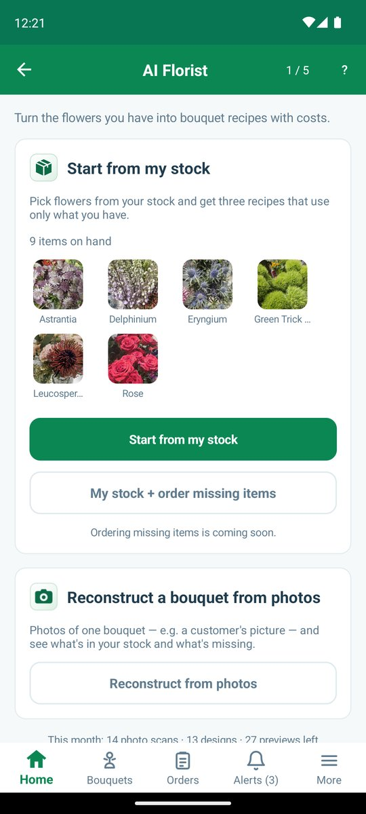
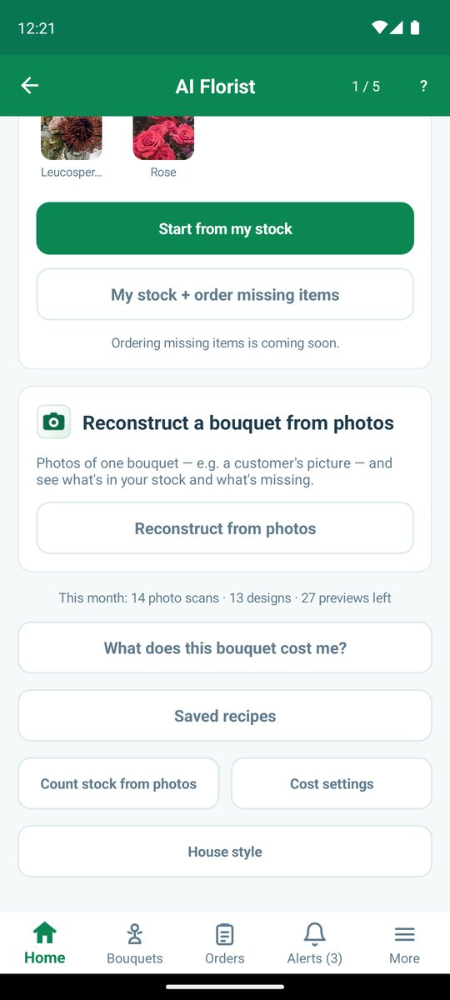
2 — Виберіть квіти зі свого складу НОВЕ
Ваш склад показано з фото, видом, кольорами, кількістю стебел і ціною за одиницю. Шукайте за назвою, сортом або кольором, фільтруйте за Квітка / Зелень / Матеріал або кольором і сортуйте.
Торкніться + Додати на картці — або натисніть і утримуйте її та перетягніть у Стартовий набір угорі. Змінюйте кількість кожної позиції кнопками − / +, видаліть квітку кнопкою ✕ або скористайтеся Додати все. Набір зберігається автоматично. Коли він готовий, торкніться Використати як мій склад › або Ввести склад вручну.
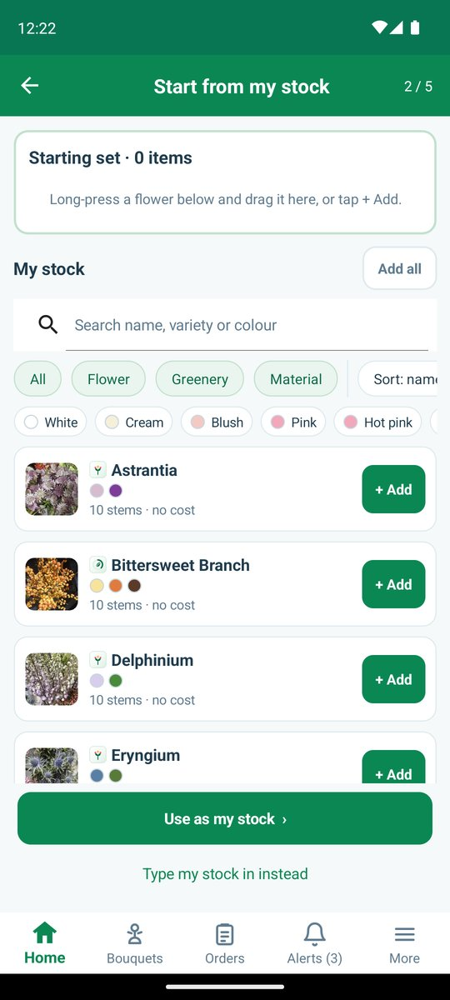
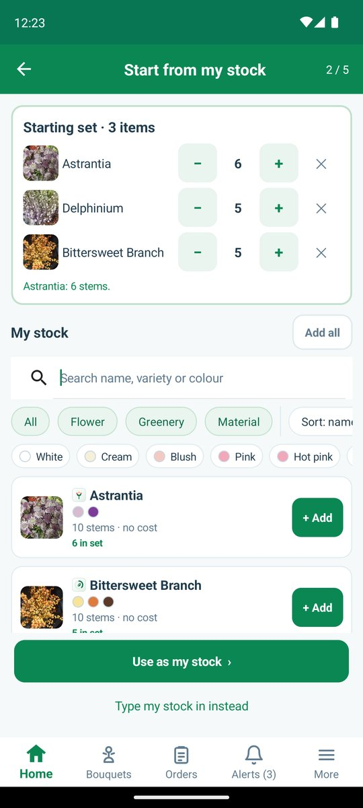
3 — Перевірте свій склад НОВЕ
Перегляньте квіти, які використає ШІ-флорист, разом із їхніми кольорами. Змінюйте кількість кнопками − / +, введіть або виправте Ціна за одиницю (позиції без ціни не враховуються в сумі), видаляйте позиції кнопкою ✕ або + Додати позицію. Торкніться Підтвердити склад ›.
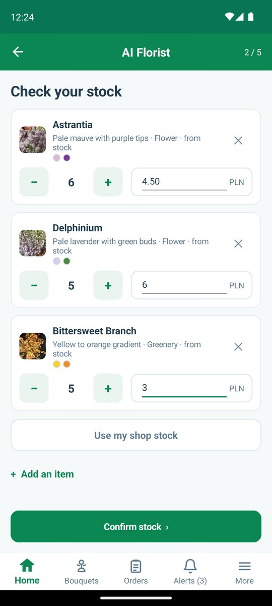
4 — Оберіть дизайн НОВЕ
Виберіть розмір букета (S, M або L), необов’язкову нагоду, стиль, кольори й ліміт вартості в злотих.
Більше про цей букет дає змогу торкнутися квітки, щоб перемикати її між Будь-як, Обов’язково і Виключити, і додати примітку для ШІ-флориста, наприклад на 60-річчя, легкий і повітряний. Фірмовий стиль і Налаштування витрат відкривають налаштування всієї крамниці. Панель показує, скільки дизайнів у вас залишилося; торкніться Створити 3 рецепти ›.
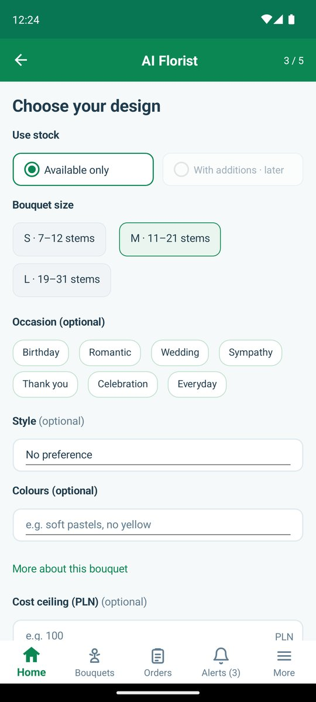
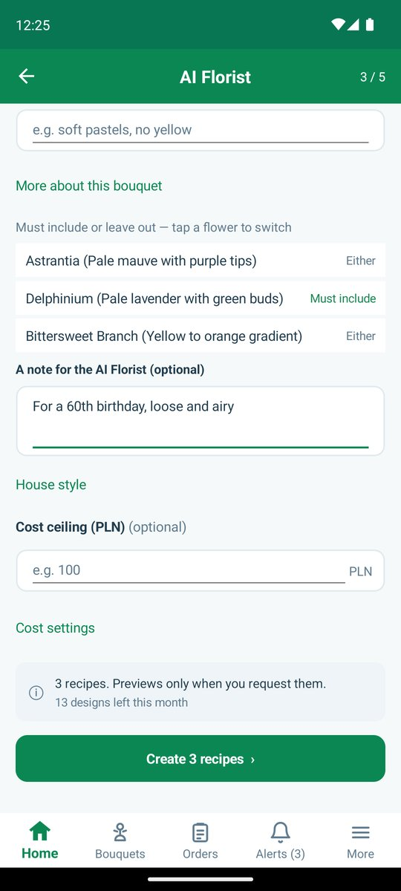
Налаштування витрат
Установіть хвилини роботи на букет, погодинну ставку, відсоток накладних витрат і те, чи ціни Брутто (з ПДВ) чи Нетто, а потім Зберегти. Запам’ятовані ціни показує ціни за одиницю, введені під час попередніх перевірок складу; наступного разу їх буде використано знову. Ці налаштування бачить лише ваша крамниця.
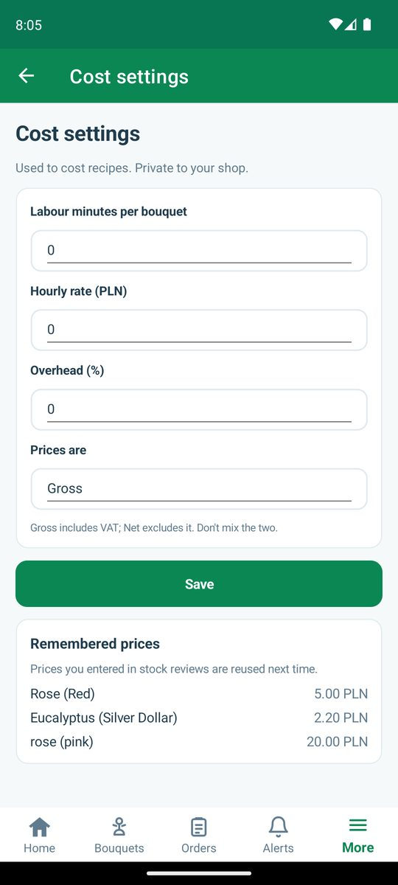
5 — Ідеї з вашого складу НОВЕ
ШІ-флорист повертає три ідеї, кожну з розміром, набором стебел і відомою вартістю (з приміткою, якщо бракує ціни). Торкніться Переглянути рецепт, щоб побачити повний рецепт, або Згенерувати перегляд, щоб отримати зображення того, як букет може виглядати, — кожен перегляд використовує один із місячного ліміту.
Оцініть ідею кнопкою 👍 або 👎; торкніться того самого пальця ще раз, щоб скинути оцінку. Ваші оцінки вчать ШІ-флориста вашого смаку. Змінити налаштування повертає на крок назад.
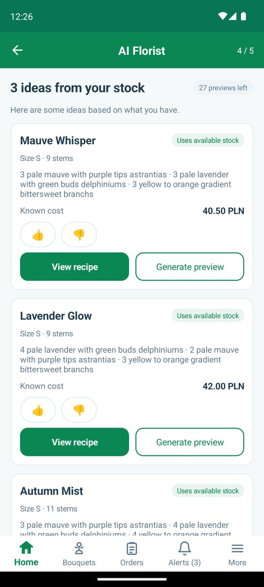
6 — Рецепт, оцінка й уточнення НОВЕ
Рецепт показує перегляд (або Згенерувати перегляд), кожну квітку з кількістю стебел, пронумеровані кроки збирання й підсумок вартості. Введіть Ціна продажу, щоб побачити свою Маржа у відсотках і злотих. Справжні квіти й кількість стебел можуть відрізнятися від пропозиції.
Ваша оцінка: торкніться 👎, щоб сказати, що не так, — Неправильні кольори, Надто рідко, Надто пишно, Незбалансований, Задорого, Не мій стиль, Непрактичні кроки або Інше, — додайте необов’язковий коментар і торкніться Надіслати 👎.
Уточнити цей рецепт: виберіть, що змінити (Більше зелені, Менше стебел, Дешевше, Більше кольору, М’якші кольори, Інша основна квітка), додайте необов’язкову примітку й торкніться Створити виправлений рецепт (один дизайн із вашого ліміту).
Зберегти рецепт зберігає його в «Збережених рецептах», Поділитися надсилає його текстом, а Я зробив(-ла) — списати зі складу списує стебла зі складу крамниці.
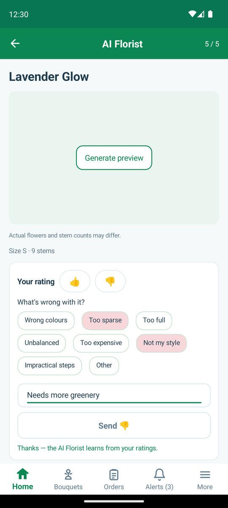
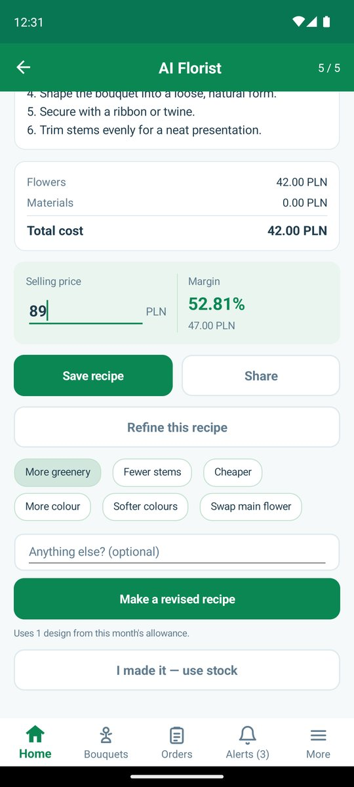
7 — Виправлені версії й порівняння НОВЕ
Виправлений рецепт додається до ідей як Виправлено · версія 2 (версія 3, … для наступних раундів).
У виправленому рецепті Порівняти з показує, що змінилося порівняно з оригіналом (або будь-яким іншим вибраним рецептом): додані чи прибрані стебла й різницю у вартості — наприклад, Гілка древогубця: 3 → 4 · Вартість +3.00 PLN.
Фірмовий стиль НОВЕ
ШІ-флорист → Фірмовий стиль розповідає ШІ-флористу, як працює ваша крамниця; він використовується для кожного дизайну. Напишіть Примітки (наприклад, вільний садовий вигляд, багато зелені, пакування в крафтовий папір), стиль і кольори за замовчуванням.
Ніколи не використовувати: вибрані тут позиції складу прибираються перед кожним дизайном; введені назви (наприклад, гвоздики) є підказкою. Улюблені використовуються, коли вони доречні.
Перемикачі: Навчатися на моїх оцінках, Допоможіть покращити ШІ-флориста (діліться знеособленими відгуками) і Допоможіть покращити розпізнавання для всіх (діліться лише анонімною кількістю ваших перевірок для кожної квітки). Забути мої оцінки стирає те, чого він навчився. Торкніться Зберегти фірмовий стиль.
Відтворення букета з фото НОВЕ
На екрані ШІ-флориста торкніться Відтворити з фото, додайте 1–5 фото того самого готового букета й торкніться Проаналізувати букет › (одне сканування фото). Залишки на складі не змінюються.
Огляд показує, з чого, схоже, складається букет, з палітрою кольорів, згруповано як На вашому складі, Замало на складі і Бракує. Кожен рядок показує найближчу позицію складу з % збігу, розрахованим за назвою, кольором і сортом, — це оцінка, а не ймовірність. Слабкі збіги ніколи не використовуються автоматично: виберіть позицію складу самі в Яка це позиція зі складу (або Немає на моєму складі), виправте кількість і торкніться Зберегти.
Купити для цього букета показує відсутні позиції; Поділитися списком надсилає його текстом. Використати зіставлені позиції › переходить до Оберіть дизайн з позиціями, які у вас є.
Скільки мені коштує цей букет? НОВЕ
ШІ-флорист → Скільки мені коштує цей букет? показує ваші оцінки з діапазоном вартості, маржею й статусом, а також скільки оцінок залишилося цього місяця. Торкніться Почати оцінку, за бажанням назвіть букет і торкніться Почати.
Додайте 1–5 фото готового букета кнопкою Зробити фото / Вибрати фото й торкніться Проаналізувати й оцінити (одна оцінка з вашого ліміту).
Результати оцінки НОВЕ
Скільки це вам коштує розподіляє вартість на квіти й зелень, матеріали, роботу й накладні витрати (з «Налаштувань витрат»). Доки кожен рядок не має ціни, ви бачите Відома вартість і скільки цін бракує.
Що в ньому показує кожну розпізнану позицію зі стеблами Мін. / Імовірно / Макс., пов’язаною позицією складу та її ціною за одиницю. Введіть відсутні ціни (позначте Запам’ятати цю ціну, щоб використати її знову), виправте кількість, додайте або видаліть рядки й торкніться Зберегти рядки.
Коли все заповнено, ви отримуєте Разом, імовірний діапазон, Рекомендована ціна з маржею 60 % і — після того, як ви введете Ваша ціна продажу й торкнетеся Встановити, — свою маржу в злотих і відсотках. Списати зі складу просить підтвердження, а потім записує рядки, пов’язані зі складом, як Використано · Виготовлено: оцінений букет в історії позиції, Відкрити в ШІ-флористі відкриває букет в огляді відтворення, щоб створити дизайн на його основі, а Видалити оцінку її видаляє.
Збережені рецепти
Рецепти, збережені з помічника, з’являються тут, щоб ви могли зробити їх знову.
Налаштування компанії
Інформація про крамницю
Більше → Налаштування профілю показує, хто ввійшов, і дані вашої компанії. Торкніться Редагувати профіль, щоб змінити назву компанії, опис, контактну ел. пошту й телефон, а потім торкніться Зберегти зміни. Контактну ел. пошту бачать клієнти, і вона не залежить від пошти для входу.
Нижче: Години роботи →, тип продавця й розташування з Змінити адресу →, версія застосунку й стан з’єднання із сервером, а також Вийти.
Як ви продаєте НОВЕ
Налаштування профілю → Як ви продаєте? показує, чи ви продаєте у своїй крамниці, з розумними вазами, чи лише онлайн (з доставкою, без ваз).
Щоб перейти на продаж лише онлайн, спершу треба повернути кожну розумну вазу — картка показує, скільки їх у вас ще є, і просить зв’язатися з нами, щоб організувати повернення. Крамниця лише онлайн може торкнутися Перейти на продаж у крамниці з розумними вазами; її онлайн-оголошення залишаються в продажу, доки їх не куплять або доки вони не спливуть.
Години роботи
Позначте кожен день як робочий або вихідний і виберіть час відкриття й закриття, а потім торкніться Зберегти розклад. Клієнти бачать ці години в профілі вашої крамниці.
Зміна адреси крамниці
Показує поточну адресу. Введіть нову адресу або поставте шпильку на мапі, торкніться Перевірити адресу, а потім Зберегти адресу. Усі ваші букети перемістяться в нове місце на мапі клієнтів.
Замовлення розумних ваз
Замовлення ваз
Більше → Замовити розумні вази показує ваші замовлення обладнання з фільтрами Очікує, Підтверджено, Відправлено, Доставлено і Скасовано, а після відправлення — номер відстеження кур’єра. Торкніться Замовити розумні вази, щоб замовити ще.
Оформлення замовлення ваз
Виберіть, скільки ваз вам потрібно (1–10), кнопками − / +, введіть адресу доставки й необов’язкові примітки до доставки та торкніться Оформити замовлення. Команда платформи перевіряє замовлення й відправляє вази. Застосунок не стягує оплату.
Статистика
Аналітика
Дохід, середня вартість замовлення, кількість замовлень, активні вази, продані й доступні букети. Перемикайте період між Сьогодні, 7 днів, 30 днів і Усі.
Платежі
Платіжна активність за останні 30 днів: оплачені замовлення, невдалі платежі, повернення, спори, частка повернень і найчастіший спосіб оплати. Потребує уваги показує платежі, які треба опрацювати, з фільтрами Повторити повернення, Спірне і Повернення не вдалося.
Відгуки клієнтів
Оцінки й відгуки, які клієнти залишили до своїх замовлень. Установіть мінімальну оцінку кнопками − / + і торкніться Фільтрувати.
Оплата, довідка й підтримка
Оплата й підписка
Показує ваш план на платформі FindMyFlowers, його статус і дати пробного періоду або поновлення, а також дає змогу скасувати підписку. Якщо план не знайдено, ви побачите повідомлення, як тут. Щоб додати або замінити платіжну картку, застосунок відкриває в браузері захищену сторінку картки на Порталі продавця.
Довідка НОВЕ
Більше → Довідка або ? угорі екранів «Головна», «Букети», «Замовлення», «Склад», «ШІ-флорист» і «Запити на букети» відкриває цей посібник у вкладці браузера в застосунку, на сторінці для цього екрана. Вхід до документації виконується автоматично — без повторного входу. Закрийте вкладку кнопкою ✕, щоб повернутися до застосунку.
Якщо автоматичний вхід неможливий (наприклад, після тривалого часу офлайн), відкриється сторінка входу до документації, а потім та сама сторінка.
Зв’язок із нами й вихід
Більше → Зв’язатися з нами відкриває поштовий застосунок телефона з листом до команди FindMyFlowers. Вийти (унизу меню «Більше» або в «Налаштуваннях профілю») одразу завершує сеанс і повертає на вітальний екран.
Запити на букети НОВЕ
Запити на букети поблизу НОВЕ
Клієнти можуть опублікувати запит на букет — нагода, дата, бюджет і фото, — а крамниці поблизу надсилають пропозиції. Відкрийте Головна → Запити на букети або Більше → Запити на букети, щоб побачити відкриті запити у вашому радіусі обслуговування, від найближчих, з бюджетом, районом, бажаним часом і кількістю вже отриманих пропозицій. Нові запити також надходять у Сповіщення.
Показати мапу перемикає на мапу. Доки клієнт не оплатив, ви бачите лише приблизну ділянку (близько 500 м) і район — ніколи точну адресу.
Сповіщення про запити НОВЕ
Новий запит поблизу вашої крамниці з’являється в Сповіщення з відстанню, датою, бюджетом і районом. Торкніться його, щоб відкрити запит; запит, термін якого минув або який уже взято, показує Цей запит більше недоступний.
Налаштування запитів НОВЕ
Налаштування на екрані «Запити на букети» задають ваш радіус обслуговування, потрібний час на підготовку до терміну букета, сповіщення про нові запити, тихі години (за польським часом) і необов’язковий мінімальний бюджет — запити нижче нього не надсилають вам сповіщень, але ви все одно їх бачите. Торкніться Зберегти.
Запит і його фото НОВЕ
Торкніться запиту, щоб відкрити його: примітка клієнта, район і відстань, бюджет, коли потрібен букет і чи це самовивіз, чи доставка, зворотний відлік до закриття пропозицій і кількість конкурентних пропозицій. Торкніться зразкового фото, щоб збільшити його.
Відтворити з ШІ-флористом аналізує фото клієнта відносно вашого складу (одне сканування фото): що у вас є, чого бракує й орієнтовна вартість. Його чернетка примітки пропонує заміни — торкніться Використати як примітку до пропозиції, щоб скопіювати її у вашу пропозицію й відредагувати там.
Пропозиція НОВЕ
У розділі Зробити пропозицію введіть ціну (zł, з ПДВ), коли букет буде готовий (допускається до 2 годин пізніше, ніж у запиті; пізніший час позначається), примітки для клієнта й за бажанням збережений рецепт ШІ-флориста, на якому вона ґрунтується. Торкніться Надіслати пропозицію.
Панель стає Ваша пропозиція (версія n): змініть її й торкніться Оновити пропозицію, додайте до 5 фото того, що ви зробите, або Відкликати пропозицію. Поскаржитися на цей запит позначає неприйнятний запит.
Індивідуальні замовлення НОВЕ
Коли клієнт приймає вашу пропозицію й оплачує її, запит стає індивідуальним замовленням: з’являється точна адреса, а ви проводите замовлення через етапи показаними кнопками, зі зворотним відліком до терміну.
Індивідуальними замовленнями керують із запиту, а не кнопками статусу у звичайних «Замовленнях».